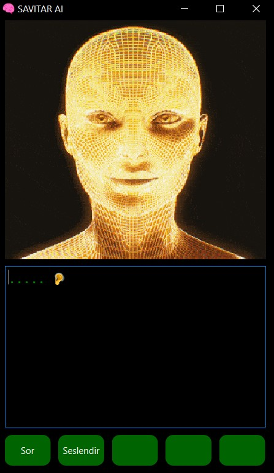

🤖 Kendi AI Asistanını Yap: Python ve PyQt6 ile Adım Adım Rehber
Bu yazıda, Python ve PyQt6 kullanarak kendi AI asistanınızı nasıl oluşturabileceğinizi adım adım göstereceğim. Bu asistan, Google Gemini AI ve Amazon Polly kullanarak sorularınıza yanıt verip, bu yanıtları sesli olarak okuyabilecek. Hazırsanız, başlayalım!
1. Ortam Dosyası (.env)
Öncelikle uygulama için gerekli 2 adet Api anahtarına sahip olmanız gerekli.
Aşağıda Gemini ve Polly anahtarlarınızı alabileceğiniz bağlantılar bulunmakta.
Gemini Api
Amazon Polly
İlk adım, API anahtarlarımızı güvenli bir şekilde saklamaktır.
Bunun için bir .env dosyası oluşturup, aşağıdaki gibi API anahtarlarımızı ekleyelim:
GEMINI_API=XXXXXXXXXXXXXXXX
AWS_ACCESS_KEY_ID= XXXXXXXXXX
aws_secret_access_key = XXXXXXXXXX
2. AI Asistanının Temel Fonksiyonları (ai.py)
"ai.py" dosyasını oluşturarak, Google Gemini AI ve Amazon Polly'i yapılandırıp, sorulara yanıt verecek ve bu yanıtları sesli olarak okuyacak fonksiyonları tanımlayalım.
import google.generativeai as genai
from dotenv import load_dotenv
import os
load_dotenv()
def soru_sor(soru):
genai.configure(api_key=os.getenv("GEMINI_API"))
# Model yapılandırması
generation_config = {
"temperature": 0.1,
"top_p": 0.95,
"top_k": 0,
"max_output_tokens": 8192,
}
safety_settings = [
{"category": "HARM_CATEGORY_HARASSMENT", "threshold": "BLOCK_NONE"},
{"category": "HARM_CATEGORY_HATE_SPEECH", "threshold": "BLOCK_NONE"},
{"category": "HARM_CATEGORY_SEXUALLY_EXPLICIT", "threshold": "BLOCK_NONE"},
{"category": "HARM_CATEGORY_DANGEROUS_CONTENT", "threshold": "BLOCK_NONE"},
]
model = genai.GenerativeModel(
model_name="gemini-1.5-pro-latest",
generation_config=generation_config,
safety_settings=safety_settings
)
convo = model.start_chat(history=[])
response = convo.send_message(soru)
cleaned_text = response.text.strip().replace("*", "").replace("#", "")
return cleaned_text
Bu kod, Google Gemini AI API'yi yapılandırır ve sorulan soruya yanıt üretir. Yanıt metnini temizler ve döndürür.
3. Sesli Yanıt Oluşturma
Yanıtları sesli olarak okumak için Amazon Polly kullanacağız. İşte bu işlemi gerçekleştiren kod:
from PyQt6 import QtCore, QtWidgets, QtGui
from ai import soru_sor
from pydub import AudioSegment
from pydub.playback import play
import boto3, os
from dotenv import load_dotenv
load_dotenv()
class SoruThread(QtCore.QThread):
finished = QtCore.pyqtSignal(str)
set_text = QtCore.pyqtSignal(str)
def __init__(self, soru, parent=None):
super(SoruThread, self).__init__(parent)
self.soru = soru
def run(self):
try:
text = soru_sor(self.soru)
self.set_text.emit(text)
polly = boto3.client('polly', region_name='us-east-1', aws_access_key_id=os.getenv("AWS_ACCESS_KEY_ID"),
aws_secret_access_key=os.getenv("aws_secret_access_key"))
response = polly.synthesize_speech(Engine='neural', Text=text, OutputFormat="mp3", VoiceId="Burcu")
if "AudioStream" in response:
output_file = "speech.mp3"
with open(output_file, "wb") as file:
file.write(response["AudioStream"].read())
sound = AudioSegment.from_file(output_file)
play(sound)
self.finished.emit("Bitti")
self.set_text.emit("")
else:
self.finished.emit("Ses yok!")
except Exception as e:
self.finished.emit(str(e))
Bu kod, "soru_sor" fonksiyonunu kullanarak yanıtı alır ve Amazon Polly ile sesli yanıt oluşturur. Yanıtı "play" fonksiyonu ile çalar.
4. PyQt6 ile GUI Oluşturma
Şimdi, kullanıcı arayüzünü oluşturmak için PyQt6 kullanacağız. Bu adımda, asistanın görünümünü ve işlevselliğini tanımlayacağız.
class Ui_MainWindow(object):
def setupUi(self, MainWindow):
MainWindow.setObjectName("MainWindow")
MainWindow.resize(362, 600)
MainWindow.move(70, 200)
self.centralwidget = QtWidgets.QWidget(parent=MainWindow)
self.centralwidget.setObjectName("centralwidget")
self.asistangif = QLabel(parent=self.centralwidget)
self.asistangif.setGeometry(QtCore.QRect(10, 0, 341, 311))
self.asistangif.setCursor(QtCore.Qt.CursorShape.PointingHandCursor)
self.image_path = r"img\img.gif"
self.movie = QtGui.QMovie(self.image_path)
self.asistangif.setMovie(self.movie)
self.asistangif.setScaledContents(True)
self.movie.start()
self.movie.stop()
palette = QtGui.QPalette()
palette.setColor(QtGui.QPalette.ColorRole.Window, QtGui.QColor(0, 0, 0))
palette.setColor(QtGui.QPalette.ColorRole.WindowText, QtGui.QColor(255, 255, 255))
MainWindow.setPalette(palette)
self.plainTextEdit = QtWidgets.QPlainTextEdit(parent=self.centralwidget)
self.plainTextEdit.setGeometry(QtCore.QRect(10, 320, 341, 211))
self.plainTextEdit.setObjectName("plainTextEdit")
self.plainTextEdit.setStyleSheet(
"background-color: rgba(255, 255, 255, 0); color: #00FF00; font-family: Courier; font-size: 12pt;")
self.plainTextEdit.setPlaceholderText('..... 🦻')
self.sor_buton = OvalButton(parent=self.centralwidget)
self.sor_buton.setGeometry(QtCore.QRect(10, 540, 60, 40))
self.sor_buton.setObjectName("sor_buton")
self.seslendir_buton = OvalButton(parent=self.centralwidget)
self.seslendir_buton.setGeometry(QtCore.QRect(80, 540, 60, 40))
self.seslendir_buton.setObjectName("seslendir_buton")
self.pass_buton = OvalButton(parent=self.centralwidget)
self.pass_buton.setGeometry(QtCore.QRect(150, 540, 60, 40))
self.pass_buton.setObjectName("pass_buton")
self.pass1_buton = OvalButton(parent=self.centralwidget)
self.pass1_buton.setGeometry(QtCore.QRect(220, 540, 60, 40))
self.pass1_buton.setObjectName("pass1_buton")
self.pass2_buton = OvalButton(parent=self.centralwidget)
self.pass2_buton.setGeometry(QtCore.QRect(290, 540, 60, 40))
self.pass2_buton.setObjectName("pass2_buton")
MainWindow.setCentralWidget(self.centralwidget)
self.retranslateUi(MainWindow)
QtCore.QMetaObject.connectSlotsByName(MainWindow)
self.sor_buton.clicked.connect(self.sor)
self.seslendir_buton.clicked.connect(self.seslendir)
self.playing = False
icon = QtGui.QIcon("./img/icon.ico")
MainWindow.setWindowIcon(icon)
def retranslateUi(self, MainWindow):
_translate = QtCore.QCoreApplication.translate
MainWindow.setWindowTitle(_translate("MainWindow", "SAVITAR AI"))
self.sor_buton.setText(_translate("MainWindow", "Sor"))
self.seslendir_buton.setText(_translate("MainWindow", "Seslendir"))
self.pass_buton.setText(_translate("MainWindow", ""))
self.pass1_buton.setText(_translate("MainWindow", ""))
self.pass2_buton.setText(_translate("MainWindow", ""))
def seslendir(self):
text = self.plainTextEdit.toPlainText()
if text:
if not self.playing:
self.thread = SeslendirThread(text)
self.thread.finished.connect(self.on_finished)
self.thread.set_text.connect(self.set_text)
self.thread.start()
self.gif_kontrol()
else:
QMessageBox.warning(self.centralwidget, "Uyarı", "Henüz konuşmamı bitirmedim. Beni dinle !")
else:
QMessageBox.warning(self.centralwidget, "Uyarı", "Soru sormadın ki ne deme mi bekliyorsun ?")
def sor(self):
text = self.plainTextEdit.toPlainText()
if text:
if not self.playing:
self.thread = SoruThread(text)
self.thread.finished.connect(self.on_finished)
self.thread.set_text.connect(self.set_text)
self.thread.start()
self.gif_kontrol()
else:
QMessageBox.warning(self.centralwidget, "Uyarı", "Henüz konuşmamı bitirmedim. Beni dinle !")
else:
QMessageBox.warning(self.centralwidget, "Uyarı", "Soru sormadın ki ne deme mi bekliyorsun ?")
def on_finished(self, result):
if result == "Bitti":
self.playing = False
self.movie.stop()
else:
QMessageBox.warning(self.centralwidget, "Uyarı", result)
def set_text(self, text):
self.plainTextEdit.setPlainText(text)
def gif_kontrol(self):
if not self.movie.state() == QtGui.QMovie.MovieState.Running:
self.movie.start()
if __name__ == "__main__":
import sys
app = QtWidgets.QApplication(sys.argv)
MainWindow = QtWidgets.QMainWindow()
ui = Ui_MainWindow()
ui.setupUi(MainWindow)
MainWindow.show()
sys.exit(app.exec())
Bu kod, PyQt6 kullanarak basit bir GUI oluşturur. Bu GUI, kullanıcıdan metin alır, soruyu işler ve yanıtı sesli olarak oynatır.
5. Görsel Dosyalar (img Klasörü)
Asistan görüntüsü ve uygulama simgesini "img" klasörüne atalım.

Sonuç:
Bu adımları takip ederek, Python ve PyQt6 kullanarak kendi AI asistanımızı oluşturmuş olduk. Bu asistan, Google Gemini AI ve Amazon Polly kullanarak sorulara yanıt verecek ve bu yanıtları sesli olarak okuyacak. Umarım bu rehber size yardımcı olmuştur !